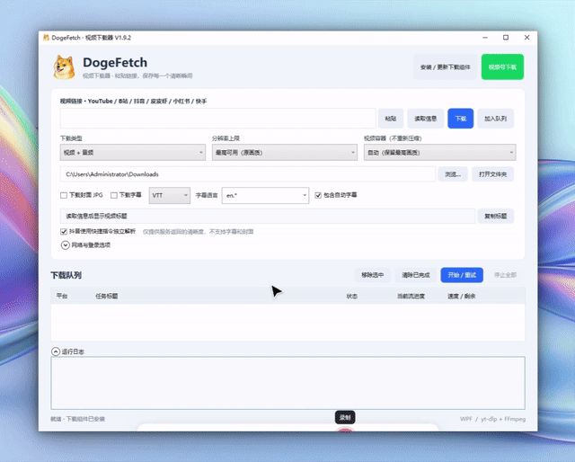
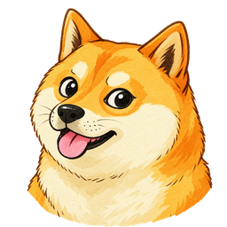
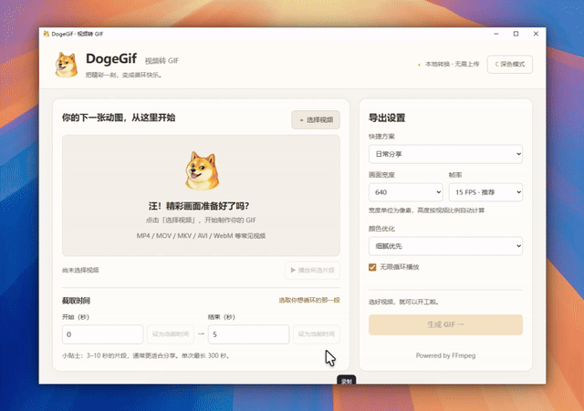
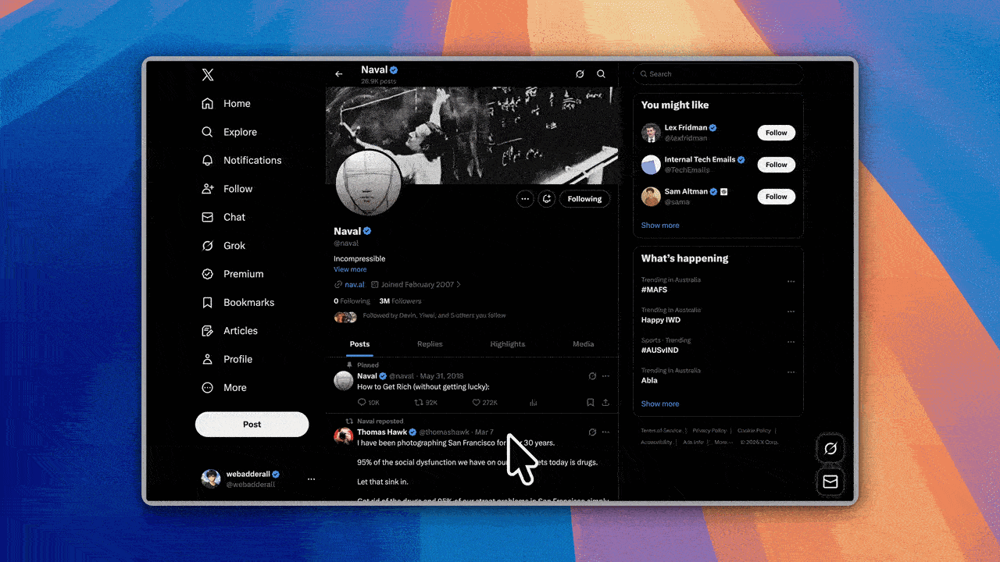

视频下载 · Windows 10 / 11 x64
DogeFetch
想保存的视频，集中安排。
粘贴视频分享链接，直接下载或加入队列批量处理。便携包已包含运行环境与下载组件，完整解压即可使用。支持油管/B站/抖音/快手/小红书/皮皮虾/微信视频号视频无水印高清下载
链接下载批量队列完整便携版
v1.9.2 · 平台可用性取决于限制与解析组件

Doge 软件小站.从一个顺手的工具开始。

粘贴视频分享链接，直接下载或加入队列批量处理。便携包已包含运行环境与下载组件，完整解压即可使用。支持油管/B站/抖音/快手/小红书/皮皮虾/微信视频号视频无水印高清下载

选一段精彩视频，调整尺寸与帧率，生成适合分享的 GIF 动图。简体中文界面，支持深浅主题，全程本地转换，无需上传。

基于 Recordly 修改的屏幕录制与编辑工具。用自动缩放、光标效果和画面背景，把操作过程讲得更清楚。
这些软件的起点，都很简单：
工作里刚好需要，却总找不到顺手的办法。
想把抖音、小红书的视频素材保存下来，不带水印；想录一段屏幕，把操作讲清楚；想从小视频里截取一个片段，转成 GIF，插进公众号文章里。
日常办公中，这些事情不大，却常常让人花时间找工具、试方法。这个小站，就是想把能解决这些问题的软件整理在一起，让你需要的时候，刚好有个顺手的选择。
本站的软件实践，主要从 GitHub 等平台的开源项目出发，结合自己的需要，借助 Codex 进行定制、修改和完善。各款软件的具体来源与许可，见对应的项目说明。
DogeFetch、DogeGif、DogeRecord 和 DogeKey 现已提供百度网盘下载与提取码。
DogeGif v1.0.0 已整理 Windows 免安装版，支持片段截取、尺寸与帧率调整，以及本地 GIF 生成和预览。
已收录多款实用工具，持续整理功能介绍和下载信息。